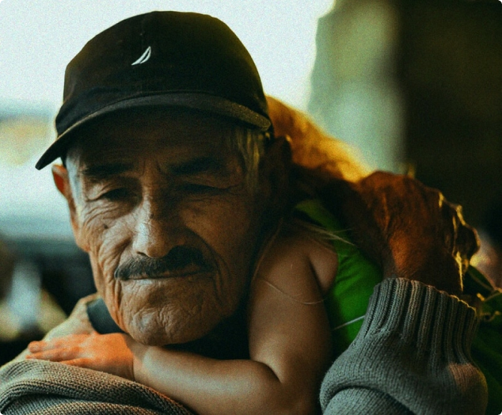

<section class="success">
    <div class="success__left left">
        <h2 class="left__title">A human–centered definition of success.</h2>
        <h3 class="left__desc">Our approach is shaped by the perspective and experience of <br> people impacted by the justice system. Together, we are focused on restoring equity and supporting success in the community.</h3>
        <button class="title__button success__btn">Our approach</button>
    </div>
    <div class="success__right right">
        
        
    </div>
</section>
